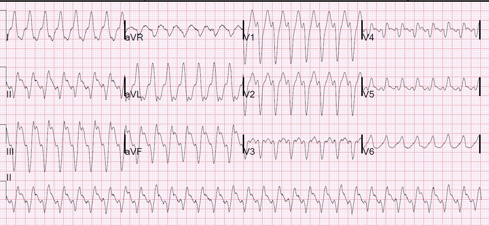
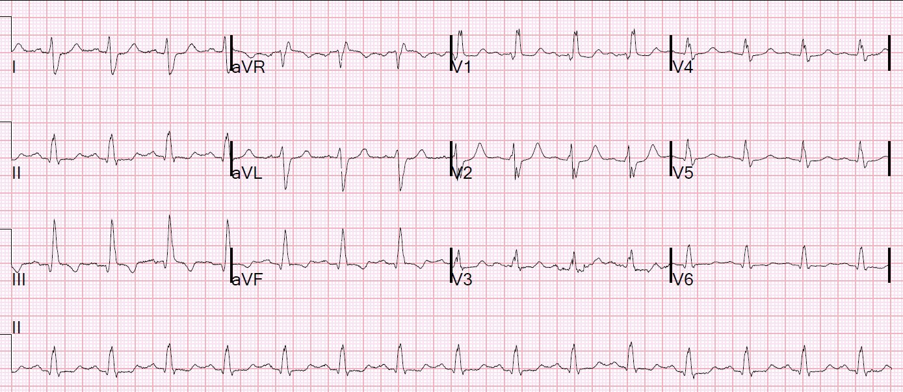
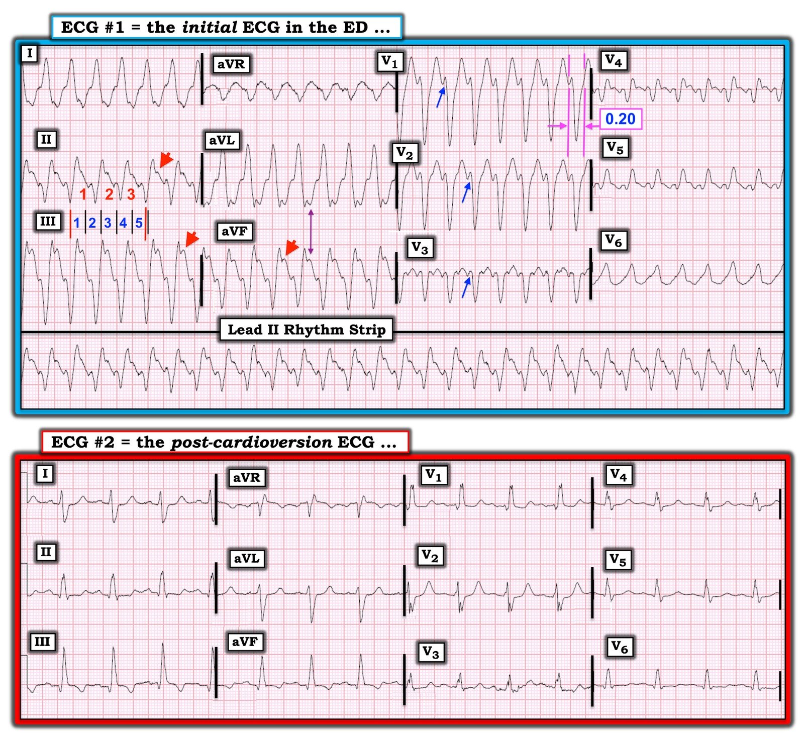

15/04/2020 — Bệnh nhân 60 mấy tuổi bị nhịp nhanh QRS rộng: nhịp này khởi phát từ đâu?
Bản dịch tiếng Việt của bài "60-something with wide complex tachycardia: from where does the rhythm originate?" – Dr. Smith’s ECG Blog. Giữ nguyên toàn bộ 5 hình ảnh của bản gốc.
Một phụ nữ lớn tuổi có tiền sử bệnh động mạch vành được đội cấp cứu ngoài viện (EMS) đưa đến với đau ngực, khó thở (SOB) và hạ huyết áp. EMS đã thử adenosine 2 lần nhưng không thành công.
Đây là điện tâm đồ của bà tại khoa cấp cứu (ED):


Smith: Đây đúng là một nhịp nhanh QRS rộng đều. Tôi không thấy sóng P. Có thể có sóng P ngược dòng sau sóng R (xem chuyển đạo II chạy dọc phía dưới). Đây rõ ràng là nhịp nhanh thất. Nó có hình dạng blốc nhánh trái (sóng r nhỏ ở V1 với sóng S sâu), nhưng sóng r rộng và khoảng RS gần 100 ms. LBBB phải có sóng r hẹp và khoảng RS không được dài quá 60-70 ms, trừ khi còn có một yếu tố khác làm QRS giãn rộng, chẳng hạn tăng kali máu hoặc thuốc chẹn kênh Na.
Việc VT có “dạng LBBB” cho thấy nó khởi phát từ thất phải. Vì trục QRS ở tất cả các chuyển đạo thành dưới đều âm (đi ra xa thành dưới) và dương ở I và aVL (đi về phía I và aVL), có thể dự đoán điểm khởi phát nằm ở phần dưới của thất phải hoặc ở phía dưới và bên phải của vách liên thất.
Diễn biến
Nhân viên cấp cứu ngoài viện đã thử adenosine 2 lần, điều này an toàn và không bị chống chỉ định. Nhưng, đúng như dự đoán, nó không có tác dụng gì.
Bệnh nhân được dùng một liều nhỏ etomidate và được sốc điện chuyển nhịp tại khoa cấp cứu.
Đây là điện tâm đồ sau sốc điện chuyển nhịp:


Có sóng Q ở thành dưới gợi ý nhồi máu cơ tim thành dưới cũ. Nhồi máu cơ tim thành dưới để lại mô sẹo, là nguồn có khả năng gây rối loạn nhịp thất do vào lại.
Đây có lẽ là nguồn gốc của cơn VT.
Chụp mạch vành:
Vôi hóa động mạch vành nặng
Bệnh lý mạch máu nhỏ đoạn xa mức độ trung bình đến nặng, chủ yếu thấy ở nhánh sau bên phải RPL1, 2
Ngoài ra, mảng xơ vữa nhẹ, không có bệnh động mạch vành tắc nghẽn có ý nghĩa trên chụp mạch.
Ghi chú của bác sĩ điện sinh lý
ĐIỆN TÂM ĐỒ LÚC VÀO VIỆN: Nhịp nhanh QRS rộng với blốc nhánh trái không điển hình, sóng lệch trát đậm ở aVR và V6 từ khởi đầu QRS đến sóng lệch kéo dài 100 ms, ghi nhận nhát hỗn hợp ở aVR trên trạm đọc điện tâm đồ, phù hợp với nhịp nhanh thất có nguồn gốc dưới-vách (inferoseptal).
Theo dõi từ xa (telemetry): Nhịp xoang bình thường suốt thời gian theo dõi, không có nhát lạc chỗ nhĩ hay thất.
Siêu âm tim:
Phân suất tống máu thất trái ước tính ở giới hạn dưới của bình thường; 45-50%.
Rối loạn vận động thành khu trú – thành dưới/dưới-vách: vô động.
Rối loạn vận động thành khu trú – thành dưới-bên.
Rối loạn vận động thành khu trú – mỏm, có thể có.
Có bằng chứng sẹo đặc liên quan đến thành dưới và thành dưới-vách
Nhận định
Nhịp nhanh QRS rộng trên nền bệnh tim cấu trúc, đã biết có sẹo đặc ở thành dưới và dưới-vách do nhồi máu cơ tim trước đây, với triệu chứng hồi hộp đánh trống ngực và vã mồ hôi; hình dạng theo tiêu chuẩn Brugada và tiêu chuẩn aVR của Vereckei phù hợp nhất với nhịp nhanh thất có nguồn gốc vùng dưới-vách.
Tuy nhiên, do LBBB có một số đặc điểm điển hình nên khó loại trừ hoàn toàn SVT.
Thăm dò điện sinh lý (EP study):
–Không gây ra được SVT
–Không gây ra được dẫn truyền lệch hướng dạng LBBB
–Do đó, đây là nhịp nhanh thất
–Đã cấy máy khử rung tim (ICD)

===================================
BÌNH LUẬN CỦA TÔI, bởi KEN GRAUER, MD (15/4/2020):
===================================
Bệnh nhân trong ca này đến với một WCT (Wide-Complex Tachycardia – nhịp nhanh QRS rộng) đều. Như mọi khi — thật tuyệt khi chúng ta có “Đáp án”, ở đây dưới dạng một thăm dò điện sinh lý ghi nhận không có bất kỳ SVT nào — kèm xác nhận rằng nhịp này là VT. Dù vậy, vì có sự không chắc chắn trong chẩn đoán ban đầu tại khoa cấp cứu (dường như đã cân nhắc nhiều đến nguyên nhân SVT + cho rằng có sóng P) — tôi sẽ bổ sung thêm vào các điểm mà Dr. Smith đã nêu trong bình luận, cùng với dữ liệu trong báo cáo của bác sĩ tim mạch điện sinh lý.
- Cho rõ ràng — tôi đã sao lại và đánh dấu điện tâm đồ ban đầu cùng với bản ghi sau chuyển nhịp bên dưới nó trong Hình 1.


SUY NGHĨ CỦA TÔI: Trước đây tôi đã điểm lại Cách tiếp cận hệ thống của tôi trong đọc nhịp (Xem Bình luận của tôi trong bài đăng ngày 16 tháng Mười năm 2019).
- Có 6 thông số MẤU CHỐT cần xem xét khi đánh giá có hệ thống bất kỳ rối loạn nhịp nào. Thông số thứ 1 (và quan trọng nhất) — là bệnh nhân có ổn định huyết động hay không. Dù không được nêu rõ trong phần trình bày ở đây — tôi sẽ giả định rằng mặc dù có hồi hộp đánh trống ngực làm bệnh nhân ở viện dưỡng lão này thức giấc + vã mồ hôi và hơi khó thở — bệnh nhân vẫn ổn định huyết động — vì EMS đã cho dùng adenosine.
- Mặc dù các tiêu chuẩn cụ thể để đánh giá ổn định huyết động bao gồm sự hiện diện (hoặc vắng mặt) của hạ huyết áp, đau ngực, khó thở và/hoặc thay đổi tri giác liên quan đến rối loạn nhịp — thì vẫn cần chủ động đưa ra một đánh giá tổng thể kiểu “Gestalt” nhờ việc “có mặt tại chỗ” (tức là, tại giường bệnh nhân). Lý do là NẾU bệnh nhân mất ổn định huyết động như hậu quả trực tiếp của rối loạn nhịp nhanh — thì sốc điện chuyển nhịp ngay lập tức sẽ được chỉ định bất kể nhịp đó là SVT hay VT.
- Một khi bạn đã chắc chắn bệnh nhân có ổn định huyết động — 5 thông số còn lại cần đánh giá có thể dễ dàng ghi nhớ bằng câu “Watch Your Ps and Qs, and the 3 Rs” – “hãy để ý P, Q và các chữ R” (tức là, sự hiện diện của sóng P — độ rộng QRS — và Rate – tần số + Regularity – tính đều của nhịp + xác định xem sóng P có Related – liên quan với các phức bộ QRS lân cận hay không).
- Việc xem xét 5 thông số này theo thứ tự nào không quan trọng — miễn là từng thông số trong 5 thông số đều được xem xét! Điều này liên quan đến ca này — vì ở trên không hề đề cập tần số của WCT này là bao nhiêu — và trong diễn giải ban đầu tại khoa cấp cứu cũng không đề cập mối liên quan có thể có giữa các sóng P bị nghi ngờ với các phức bộ QRS lân cận.
LƯU Ý: Chúng tôi xác định nhịp trong điện tâm đồ #1 là một WCT đều — vì tần số nhanh, và các phức bộ QRS vừa đều vừa rộng.
- Xem kỹ hơn — phức bộ QRS rất rộng. Việc đo bất kỳ khoảng nào cũng nên thực hiện ở chuyển đạo mà bạn thấy rõ điểm bắt đầu và điểm kết thúc của khoảng đó — và là nơi khoảng đó dài nhất. Khi đo — tôi tìm một phức bộ QRS bắt đầu hoặc kết thúc trên một đường kẻ đậm. Trong điện tâm đồ #1 — tôi chọn dùng chuyển đạo V1. Các đường thẳng đứng màu HỒNG cho thấy phức bộ QRS cuối cùng ở chuyển đạo này bắt đầu trên một đường kẻ đậm — và kết thúc ở đường kẻ đậm kế tiếp. Như vậy, phức bộ QRS trong điện tâm đồ #1 đo được 0,20 giây (hóa ra rộng hơn đáng kể so với QRS rộng trong bản ghi sau chuyển nhịp). Một tiêu chuẩn “mềm” ủng hộ VT — là sự hiện diện của một phức bộ QRS cực kỳ rộng, như chúng ta thấy ở điện tâm đồ #1.
- Phức bộ QRS trong dải nhịp dài chuyển đạo II của điện tâm đồ #1 đều tuyệt đối. Biết nhịp đều tuyệt đối giúp loại trừ mọi khả năng rung nhĩ — và giúp tính tần số tim dễ dàng hơn.
- Khi nhịp nhanh và đều — phương pháp Cách-Một-Nhát (hoặc Cứ-Mỗi-Ba-Nhát) cho phép ước tính tần số nhanh và chính xác. Tìm một phức bộ QRS bắt đầu trên một đường kẻ đậm. Trong điện tâm đồ #1 — tôi chọn nhát thứ 2 ở chuyển đạo II (xem đường thẳng đứng màu ĐỎ thứ 1 dưới nhát này). Dùng phương pháp Cứ-Mỗi-Ba-Nhát — khoảng thời gian cần để ghi 3 nhát (các số màu ĐỎ ở chuyển đạo II) là chưa tới 5 ô lớn một chút (các số màu XANH trong Hình này). Do đó — MỘT PHẦN BA tần số là nhanh hơn một chút so với 300/5 ~60-65/phút.
- Do đó, tần số thực tế của nhịp trong điện tâm đồ #1 là ~60-65 X 3 ~185-190/phút. Biết tần số thực tế của WCT trong điện tâm đồ #1 có liên quan đến ca này — vì tuy không phải là không thể, nhịp nhanh xoang là cực kỳ khó xảy ra ở tần số nhanh như vậy. (Theo kinh nghiệm của tôi — nhịp nhanh xoang hiếm khi vượt quá 170/phút ở bệnh nhân người lớn không đang gắng sức.)
- BẤM VÀO ĐÂY — nếu bạn muốn xem video ôn tập ngắn về phương pháp Cách-Một-Nhát này.
LƯU Ý: Trong diễn giải ban đầu tại khoa cấp cứu cho điện tâm đồ #1 có đề cập đến “nhiều khả năng có sóng P”. Cả tôi lẫn Dr. Smith đều không cho rằng có sóng P trong điện tâm đồ #1 — nhưng quả thật thường khó xác định chắc chắn có hoạt động nhĩ hay không trong một nhịp QRS rộng nhanh như chúng ta thấy ở đây.
- Tôi đoán rằng người điều trị tại khoa cấp cứu đã nghĩ các sóng lệch tròn ở khởi đầu đoạn ST trong mỗi chuyển đạo thành dưới là hoạt động nhĩ (các đầu mũi tên ĐỎ). Các sóng lệch tròn, dương này tương ứng về thời gian với sóng lệch âm mà chúng ta thấy ngay sau phức bộ QRS ở chuyển đạo aVL (được đánh dấu bằng mũi tên hai đầu mảnh màu tím). Nhưng NẾU các sóng lệch này là sóng P — thì chúng không phải là sóng P ngược dòng, vì chúng dương (thay vì âm) ở các chuyển đạo thành dưới.
- NẾU thay vào đó, các sóng lệch tròn, dương ở các chuyển đạo thành dưới này là sóng P dẫn truyền xuôi dòng — thì nhịp này sẽ là nhịp nhanh xoang. Nhưng điều đó rất khó xảy ra vì: i) Nhịp nhanh xoang hiếm khi xảy ra ở tần số 185-190/phút! — và, ii) Các sóng lệch này rất lớn ở chuyển đạo III và aVF. Do đó — tôi không cho rằng có sóng P trong điện tâm đồ #1. Thay vào đó, tôi cho rằng các sóng lệch tròn ở chuyển đạo thành dưới và sóng lệch âm ở chuyển đạo aVL là khởi đầu của đoạn ST sau QRS rộng.
Tóm lại — điều này cho chúng ta một nhịp WCT đều khởi phát đột ngột với tần số ~185-190/phút (làm bệnh nhân ở viện dưỡng lão này thức giấc khỏi giấc ngủ say) — không có bất kỳ dấu hiệu rõ ràng nào của hoạt động nhĩ.
- ĐIỂM THEN CHỐT (PEARL) #1 — Hãy nhớ các xác suất thống kê. Y văn cho thấy hơn 80% các nhịp WCT đều mới khởi phát mà không có dấu hiệu rõ ràng của hoạt động nhĩ là VT. Ngay cả trước khi bạn nhìn vào điện tâm đồ — con số thống kê này tăng lên hơn 90% nếu bệnh nhân đang xét lớn tuổi và có bệnh tim nền. Vì vậy, tư duy của chúng ta luôn luôn cần phải là Giả định là VT cho tới khi chứng minh được điều ngược lại — và điều trị bệnh nhân tương ứng.
- Chẩn đoán phân biệt chính của một nhịp WCT đều không có dấu hiệu rõ ràng của hoạt động nhĩ là VT so với SVT. Hãy nhớ rằng các nhịp SVT có thể biểu hiện với phức bộ QRS rộng không chỉ do dẫn truyền lệch hướng — mà còn do blốc nhánh có sẵn từ trước. Ít gặp hơn, các nguyên nhân khác của nhịp WCT đều có thể gồm: i) AVRT, với dẫn truyền xuôi dòng qua AP (đường phụ) tạo ra một nhịp SVT QRS rộng đều; và/hoặc, ii) Một số tình trạng ngộ độc (tức là, ngộ độc thuốc chống trầm cảm ba vòng hoặc ngộ độc thuốc chẹn kênh natri khác, tăng kali máu, v.v.).
- Về nhịp WCT đều trong điện tâm đồ #1 — hình dạng QRS bề ngoài giống LBBB (Left Bundle Branch Block – blốc nhánh trái) — vì phức bộ QRS có dạng một pha (dương hoàn toàn) ở các chuyển đạo bên trái I và V6 — và QRS chủ yếu âm ở các chuyển đạo phía trước.
ĐIỂM THEN CHỐT (PEARL) #2: Bất chấp sự giống nhau bề ngoài với LBBB đã nêu ở trên — hình dạng QRS trong điện tâm đồ #1 không “điển hình” cho LBBB!
- Với hình dạng LBBB điển hình — hoặc là không có sóng lệch dương ban đầu (sóng r) ở các chuyển đạo phía trước — hoặc — sóng lệch dương ban đầu ở các chuyển đạo phía trước rất hẹp. Ngược lại, các mũi tên XANH ở chuyển đạo V1, V2 và V3 của điện tâm đồ #1 làm nổi bật một sóng lệch r ban đầu rộng đáng ngạc nhiên! Xuất phát từ khả năng thống kê ~90% rằng nhịp WCT đều trong điện tâm đồ #1 của bệnh nhân viện dưỡng lão này là VT — dấu hiệu hình dạng QRS không điển hình (tức là, không giống bất kỳ dạng BBB hay blốc phân nhánh nào) làm tăng khả năng nhịp này là VT lên hơn 95%.
- LƯU Ý — khả năng VT hơn 95% không phải là 100%. Luôn có thể có ngoại lệ (tức là, bệnh nhân có thể có điện tâm đồ nền cực kỳ bất thường — điều mà chúng ta không thể biết trừ khi có được bản ghi trước đó). Dù vậy, có quá đủ bằng chứng thuyết phục để giả định rằng nhịp trong điện tâm đồ #1 là VT (và điều trị tương ứng) cho tới khi chúng ta chứng minh được điều ngược lại.
- BẤM VÀO ĐÂY — nếu bạn muốn biết thêm “Quan điểm của tôi” về đánh giá điện tâm đồ trong WCT đều.
Bệnh nhân này đã được sốc điện chuyển nhịp tại khoa cấp cứu. Bản ghi sau chuyển nhịp được trình bày trong Hình 1 là điện tâm đồ #2.
- Bạn sẽ diễn giải bản ghi 12 chuyển đạo trong điện tâm đồ #2 như thế nào?
- Điện tâm đồ #2 ủng hộ hay bác bỏ kết luận của chúng ta rằng WCT đều trong điện tâm đồ #1 là VT?
TRẢ LỜI: Nhịp xoang bình thường đã được khôi phục trong điện tâm đồ #2. Phức bộ QRS rộng — dù như đã nêu ở trên, không rộng bằng lúc đang WCT.
- Hình dạng QRS trong điện tâm đồ #2 phù hợp với RBBB vì: i) Phức bộ QRS rộng (tôi đo được thời gian QRS ~0,14 giây); ii) Có phức bộ rsR’ ở chuyển đạo bên phải V1; và, iii) Có sóng S tận ở các chuyển đạo bên trái I và V6.
- Dường như còn có LPHB (Left Posterior HemiBlock – blốc phân nhánh trái sau) — vì sóng S đi thẳng xuống làm QRS ở chuyển đạo I chủ yếu âm + có phức bộ qR ở các chuyển đạo thành dưới. Sự hiện diện của RBBB/LPHB đủ tiêu chuẩn là blốc hai phân nhánh — và là dấu chỉ bệnh tim nền đáng kể.
- Có sóng Q ở thành dưới, đặc biệt ở chuyển đạo III và aVF sâu hơn và rộng hơn bình thường. Xét biên độ QRS khiêm tốn của các phức bộ ở chuyển đạo V5 và V6 — sóng Q ở các chuyển đạo này cũng lớn hơn mong đợi. Những dấu hiệu này phù hợp với nhồi máu dưới-bên cũ.
- Có phân mảnh rõ rệt ở nhiều chuyển đạo. Điều này thấy rõ nhất ở chuyển đạo V1 (khía kép ở sóng R’) — V2 (khía rõ ở đáy sóng S) — và ở chuyển đạo V3 và V4 (lần lượt là khía ở nhánh lên và nhánh xuống của sóng R). Sự hiện diện của phân mảnh rõ rệt ở điện tâm đồ #2, kèm blốc hai phân nhánh + sóng Q nhồi máu càng củng cố thêm kết luận rằng bệnh nhân này có bệnh tim nền nặng. Biết điều này, và thấy hình dạng QRS ở điện tâm đồ #2 khác biệt đến thế nào (so với lúc nhịp WCT đều ở điện tâm đồ #1) — giúp gần như chắc chắn rằng WCT ở điện tâm đồ #1 là VT.
- NẾU bạn muốn biết thêm về chủ đề phân mảnh — xem Bình luận của tôi trong bài đăng ngày 31 tháng Một năm 2020.